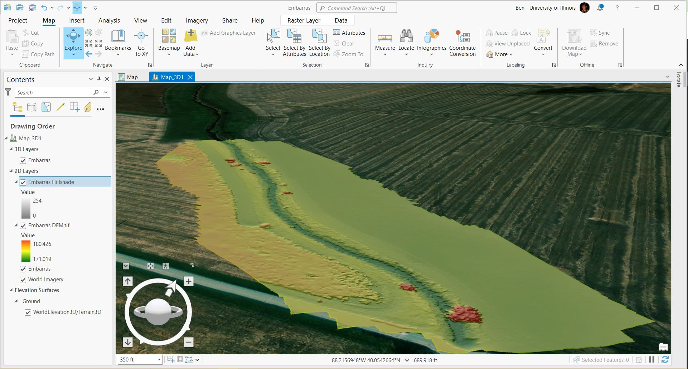

Research Projects
DuDOT Transportation Planning Internship
Natural Resrouces and Environmental Sciences Research Internship
Drone & Photogrammetry
DuPage County Transportation Planning Internship
From May to August 2022, I was the sole transportation planning intern for the DuPage County Division of Transportation.
To highlight my internship:
- I created a portfolio of maps that county engineers used for the federal Highway Safety Improvement Plan and the DuPage Local Road Safety Plan.
- I helped design the Willowbrook Corners Mobility Project, a transit system designed to help low income residents commmute to possible employment and retail centers.
- I conducted traffic speed surveys to make sure stoplights were correctly calibrated.
- I used Esri's Survey123 to database ADA compliance issues around the county.

HSIP Map Example
In accordance with DuDOT policy, I cannot make my internship portfolio available to the public. However, I am able to share my projects upon request. If you are interested in viewing my portfolio, please send me an email.
Photogrammetry
In December 2022, I purchased a Phantom 4 Pro (UAV) with the intention of exploring the potential applications of drones and earth science field research. I’m deeply interested in structure from motion photogrammetry and digital elevation model creation using drones.
Using AgiSoft Metashape, I created 3D models of a few notable landmarks.
East Rock - New Haven CT
Casco Nature Preserve - South Haven MI
Vermilion River Outcrop - Batestown IL
UIUC Foellinger Hall - Champaign IL
Additionally, I worked with professor Dr. Michael Minn to have Agisoft Metashape and Drone2Map added to the the University of Illinois supercomputer.
As of has 9/19/2023 - AgiSoft Metshape & Drone2Map have been added to SESE-GIS, a remote access desktop dedicated to earth science students. Below, you can see a DEM I created using SESE-GIS
Drone-Derived Digital Elevation Model
Embarras River - Champaign IL
Drone Derived DEM of the Embarras River
ArcGIS Pro 3D Analyst Tool

ArcGIS Pro 3D Analyst Model of my Embarras DEM
As the second flattest state in the US, it comes as no surprise that Champaign IL exhibits very little topographical variation. This DEM/3D model demonstrates the Embarras River just south of The University of Illinois campus.
NRES Research Assistant Internship
From January to May of 2023, I was a research assistant intern for the Department of Natural Resources and Environmental Sciences. I worked for Dr. Kaiyu Guan’s lab, but was supervised by Dr. Sheng Wang. My internship focused on using my GIS skills to contribute to various remote-sensing related research projects.
To highlight my internship:
- I utilized high resolution orthoimagery, LiDAR, DEMs, and historic aerial imagery to digitize polygons of rivers in central Illinois.
- I used large public file sharing sites to refine and download large custom datafiles for GIS projects.
- I created ArcGIS Pro tutorial videos for other students working on projects.
Digitized Mackinaw River (129 Mi)